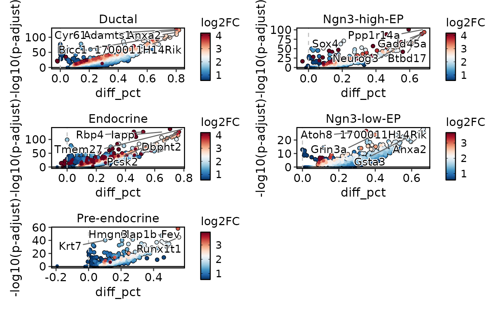
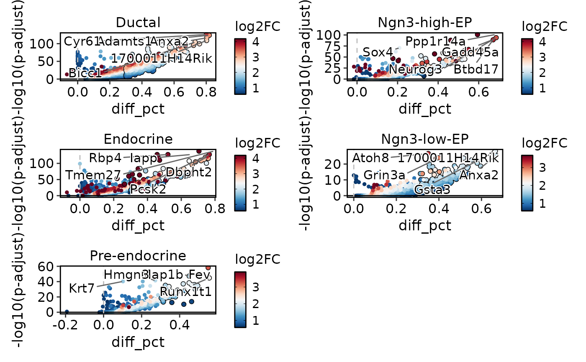

Generate a volcano plot based on differential expression analysis results.
Usage
VolcanoPlot(
srt,
group.by = NULL,
test.use = "wilcox",
DE_threshold = "avg_log2FC > 0 & p_val_adj < 0.05",
x_metric = "diff_pct",
palette = "RdBu",
palcolor = NULL,
pt.size = 1,
pt.alpha = 1,
cols.highlight = "black",
sizes.highlight = 1,
alpha.highlight = 1,
stroke.highlight = 0.5,
nlabel = 5,
features_label = NULL,
label.fg = "black",
label.bg = "white",
label.bg.r = 0.1,
label.size = 4,
aspect.ratio = NULL,
xlab = x_metric,
ylab = "-log10(p-adjust)",
theme_use = "theme_scop",
theme_args = list(),
combine = TRUE,
nrow = NULL,
ncol = NULL,
byrow = TRUE
)Arguments
- srt
An object of class
Seuratcontaining the results of differential expression analysis.- group.by
Name of one or more meta.data columns to group (color) cells by.
- test.use
A character string specifying the type of statistical test to use. Default is
"wilcox".- DE_threshold
A character string specifying the threshold for differential expression. Default is
"avg_log2FC > 0 & p_val_adj < 0.05".- x_metric
A character string specifying the metric to use for the x-axis. Default is
"diff_pct".- palette
Color palette name. Available palettes can be found in thisplot::show_palettes. Default is
"RdBu".- palcolor
Custom colors used to create a color palette. Default is
NULL.- pt.size
The size of the points. Default is
1.- pt.alpha
The transparency of the data points. Default is
1.- cols.highlight
A character string specifying the color for highlighted points. Default is
"black".- sizes.highlight
The size of the highlighted points. Default is
1.- alpha.highlight
The transparency of the highlighted points. Default is
1.- stroke.highlight
The stroke width for the highlighted points. Default is
0.5.- nlabel
An integer value specifying the number of labeled points per group. Default is
5.- features_label
A character vector specifying the feature labels to plot. Default is
NULL.- label.fg
A character string specifying the color for the labels' foreground. Default is
"black".- label.bg
A character string specifying the color for the labels' background. Default is
"white".- label.bg.r
The radius of the rounding of the labels' background. Default is
0.1.- label.size
The size of the labels. Default is
4.- aspect.ratio
Aspect ratio of the panel. Default is
NULL.- xlab
A character string specifying the x-axis label. Default is the value of
x_metric.- ylab
A character string specifying the y-axis label. Default is
"-log10(p-adjust)".- theme_use
Theme used. Can be a character string or a theme function. Default is
"theme_scop".- theme_args
Other arguments passed to the
theme_use. Default islist().- combine
Combine plots into a single
patchworkobject. IfFALSE, return a list of ggplot objects.- nrow
Number of rows in the combined plot. Default is
NULL, which means determined automatically based on the number of plots.- ncol
Number of columns in the combined plot. Default is
NULL, which means determined automatically based on the number of plots.- byrow
Whether to arrange the plots by row in the combined plot. Default is
TRUE.
Examples
data(pancreas_sub)
pancreas_sub <- standard_scop(pancreas_sub)
#> ℹ [2026-01-29 13:44:11] Start standard scop workflow...
#> ℹ [2026-01-29 13:44:12] Checking a list of <Seurat>...
#> ! [2026-01-29 13:44:12] Data 1/1 of the `srt_list` is "unknown"
#> ℹ [2026-01-29 13:44:12] Perform `NormalizeData()` with `normalization.method = 'LogNormalize'` on the data 1/1 of the `srt_list`...
#> ℹ [2026-01-29 13:44:14] Perform `Seurat::FindVariableFeatures()` on the data 1/1 of the `srt_list`...
#> ℹ [2026-01-29 13:44:14] Use the separate HVF from srt_list
#> ℹ [2026-01-29 13:44:15] Number of available HVF: 2000
#> ℹ [2026-01-29 13:44:15] Finished check
#> ℹ [2026-01-29 13:44:15] Perform `Seurat::ScaleData()`
#> ℹ [2026-01-29 13:44:15] Perform pca linear dimension reduction
#> ℹ [2026-01-29 13:44:16] Perform `Seurat::FindClusters()` with `cluster_algorithm = 'louvain'` and `cluster_resolution = 0.6`
#> ℹ [2026-01-29 13:44:16] Reorder clusters...
#> ℹ [2026-01-29 13:44:17] Perform umap nonlinear dimension reduction
#> ℹ [2026-01-29 13:44:17] Non-linear dimensionality reduction (umap) using (Standardpca) dims (1-50) as input
#> ℹ [2026-01-29 13:44:21] Non-linear dimensionality reduction (umap) using (Standardpca) dims (1-50) as input
#> ✔ [2026-01-29 13:44:25] Run scop standard workflow completed
pancreas_sub <- RunDEtest(
pancreas_sub,
group.by = "CellType"
)
#> ℹ [2026-01-29 13:44:26] Data type is log-normalized
#> ℹ [2026-01-29 13:44:26] Start differential expression test
#> ℹ [2026-01-29 13:44:26] Find all markers(wilcox) among [1] 5 groups...
#> ℹ [2026-01-29 13:44:26] Using 1 core
#> ⠙ [2026-01-29 13:44:26] Running for Ductal [1/5] ■■■■■■■ …
#> ✔ [2026-01-29 13:44:26] Completed 5 tasks in 771ms
#>
#> ℹ [2026-01-29 13:44:26] Building results
#> ✔ [2026-01-29 13:44:27] Differential expression test completed
VolcanoPlot(
pancreas_sub,
group.by = "CellType",
ncol = 2
)

VolcanoPlot(
pancreas_sub,
group.by = "CellType",
DE_threshold = "abs(diff_pct) > 0.3 & p_val_adj < 0.05",
ncol = 2
)

VolcanoPlot(
pancreas_sub,
group.by = "CellType",
x_metric = "avg_log2FC",
ncol = 2
)